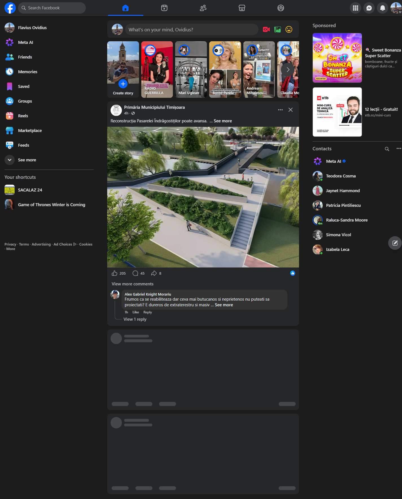
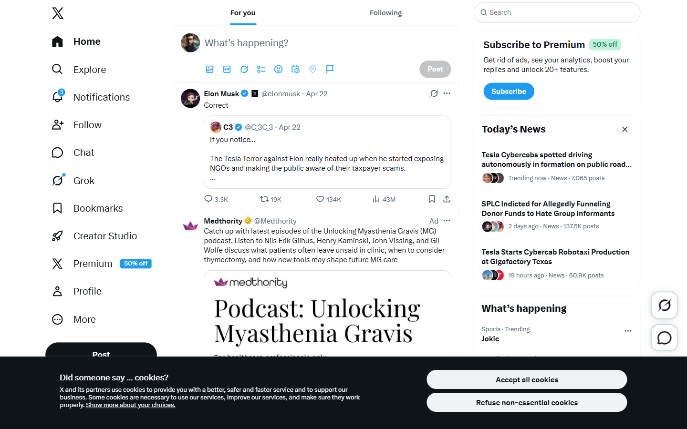
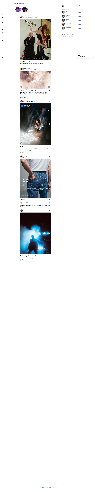

Mon
Manifesto
Why we are building Memonic
Founder letter: social media works; it is only the user experience that is broken. Build in public from day one.
Portrait of founder at a desk; handwritten wordmark sketch alongside.
Connect Europe — a field guide for the first hundred weeks.
Europe spent two decades being the user base of platforms designed somewhere else, for someone else, under rules it did not write. The result is predictable: dense feeds, algorithmic broadcast, consent screens thicker than the products they guard. The competitive research that precedes this plan — Instagram, X, and Facebook observed in a logged-in European session — confirms the convergence. Three products, one template.
Memonic enters the gap this creates. Not a Twitter clone, not a Mastodon, not a photo grid. A platform that assumes your circle is small, that treats your words and your pictures with equal care, and that keeps your data, your language, and your consent where they should be: at home, visible, and ours.
This dossier is a working plan. It contains the positioning we will use, the first four weeks of public conversation on LinkedIn, seven specific corrections to the landing page, five creative ways to win the first ten thousand members, and three things to ship before Friday. The voice throughout is editorial, not adoring. The aim is to be useful by Monday.
A single sentence, a three-pillar architecture, and the table that shows where we sit relative to the three incumbents. Copy this into every deck.
For Europeans 15 to 70 who feel broadcast-fatigued on Instagram and algorithm-weary on X, Memonic is a social network where your default audience is a small circle, text and image are equal citizens, and your data lives on this continent — so connecting online finally feels like the way people actually connect in Lisbon, Leipzig, or Tallinn.
We are not faster, cheaper, or newer than the incumbents. We are smaller on purpose, text-and-image equal, and European by construction. Each of those three axes is structurally unavailable to Instagram, X, or Facebook without contradicting their ad business model. That is the moat. The tagline — "Connect Europe" — is the promise we make the user; the moat is how we keep it.
We design for the twelve people you actually miss when you don't see them, not the twelve thousand you will never meet. Broadcast is an opt-in; the circle is the default.
A thought is not a lesser post. An image is not a bolted-on attachment. The composer accepts both with equal fluency; the feed renders both with equal care.
Data hosted in the Union. Governance under EU law. Twenty-four languages treated as first-class. Privacy stated above the fold, not buried in a banner at the bottom.
Captured in logged-in sessions from an EU region, 24 April 2026. What these screenshots show, in aggregate, is convergence: three companies with different histories arriving at the same user interface.

Three columns, dark canvas, Timișoara mayoralty post (Romanian, civic, 205 reactions) placed next to a right-rail gambling advertisement and a day-trading course. Presence dots are elegant; the surrounding density is not.
Strongest at place-based content; weakest at taste.

Labeled left rail, "For you / Following" tabs, Elon Musk at 43M views on the first card, a Medthority "Ad" underneath. The right rail's first item is a Premium upsell — the product publicly admits the free tier is compromised.
Most honest ad label; least honest business model.

Chrome melts away; full-colour imagery carries the whole visual budget. Prada editorial, a jeans campaign, a concert-venue shot. There is no text composer in the navigation — a thought without a photograph has no card to live in.
Gold standard for images; actively hostile to words.
LinkedIn is chosen on purpose: it is the one network where European policymakers, founders, and culture editors still actually read. One post a day, Monday to Sunday. Topic · angle · visual for each. Sunday posts are long-form articles.
Every item below answers a specific failure we watched the incumbents commit. Each can be shipped independently; do them in order if in doubt.
Facebook's hero "Explore the things you love" is buried under a cookie dialog; X has no promise at all. Replace our hero with a one-sentence data-sovereignty claim: "A social network that belongs to you — hosted in the European Union." Put the waitlist CTA immediately beneath.
Cf. Facebook hero occlusion · X empty hero
Don't describe product parity — demonstrate it. Embed a 6-second looping video of the composer switching between a 300-character text card and a single-image card, both rendering at identical visual weight. This is the feature the incumbents cannot copy cheaply.
Cf. Instagram has no text composer
A small animated diagram: a user posts, and the post travels to 14 named avatars (not 14,000). Caption: "Your circle — not the internet." This is the single clearest differentiator against the three incumbents' broadcast defaults.
Cf. FB/X/IG all default to broadcast
All three competitors relegate language to the footer. Move ours to the top navigation, with the six largest EU languages visible and the rest behind "Alte limbi · More languages." The page itself should respect navigator.language on first paint.
Cf. Facebook footer-only language chooser
Our first-time overlay should read like an onboarding step, not a legal tax — labelled options, honest defaults, and a visible line that says which choice is pre-selected and why. X ships a persistent in-product cookie bar even to logged-in EU users; we can win trust just by not doing that.
Cf. X in-product cookie banner · FB overlay blocks hero
A small, permanently visible block (sidebar or footer-anchor, never closeable) that shows: hosting region (Frankfurt + Amsterdam), data controller name, last independent audit date, and a link to the current subprocessor list. Make the technical facts the marketing copy.
Cf. none of the three show origin
X's landing page does not mention money; its logged-in product opens with a Premium upsell. That is bait-and-switch. Memonic's landing page should show pricing from the start: free tier (unlimited, no ads), paid tier (€4/month, team circles), pricing in euros, VAT line included. Trust is built by showing the bill before the signup.
Cf. X Premium upsell inside the product
Not growth hacks. Five tactics that assume Europe is a plural market of cities and communities, not a single funnel.
Open five beta cities in sequence — Timișoara, Lisbon, Tallinn, Ghent, Bologna — with 500 invites each. Each city gets a local coordinator, a local launch event, and regional press coverage in that city's language. We learn faster and the product feels like it comes from somewhere.
Hand-pick one hundred European photographers and one hundred European writers as launch members. The split is the message: we literally value images and words equally, and the seed content proves it on day one.
"Memonic Weekly" — a Friday editorial email, one per week, each edition anchored on one European city. Includes one circle post of the week, one written reflection, one photograph, one link to something worth reading elsewhere. Free. No paywall. Shareable.
Offer Memonic free to verified students at twenty European universities. Each university gets its own verified-student circle by default, ad-free, moderated by students. Partner with student unions; present at three freshers' weeks per term.
Physical posters at six major stations — Berlin Hbf, Gare du Nord, Milano Centrale, Amsterdam Centraal, Barcelona Sants, București Nord. Single typographic poster, one sentence, one QR code. Example: "The 2:14 to Vienna carries 800 conversations. What if they stayed?"
Each of these is achievable between now and Friday. They do not wait for the plan; they are the plan beginning.
Replace whatever is in the hero today with: "A social network that belongs to you. Hosted in the European Union." Move the language picker from the footer to the top navigation. Two lines of HTML, one of copy, one hour of work. The single change that best signals what Memonic is.
Three hundred words under the headline "Why we are building Memonic." No product screenshots. A photograph of the founder at a desk. Links to the waitlist and the domain. This seeds every Monday post for the rest of the month and gives the press something to quote by the weekend.
Register memonic.eu alongside the existing .com. Spin up Hetzner Frankfurt + Amsterdam as primary regions, point DNS. By Friday the domain, the hosting region, and the privacy copy all tell the same story — which is the point of the brand.